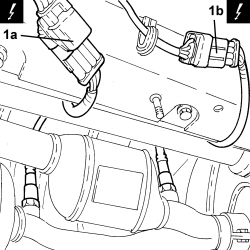
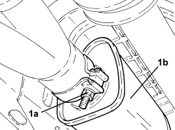
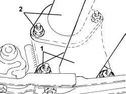

1080B65 CATALYTIC CONVERTER ASSEMBLY - R.R.
- Path
- Procedures > 10 ENGINE > 1080 EMISSION CONTROL SYSTEM > 1080B EXHAUST EMISSION CONTROL SYSTEM > 1080B65 CATALYTIC CONVERTER ASSEMBLY - R.R.
- Kind
- repair procedure (removal / refitting; the operation number is the code)
- Applies to
- engines: 3.2 JTS; all production periods
- Interactive page
- https://sloeber94.github.io/elrnDB-aBrrSpdr/en/#/946001969
Applies to: engines: 3.2 JTS; all production periods
 Removing
Removing
 Refitting
Refitting- Position the vehicle on a lift.
- Undo the fastenings and remove the protection for the rear Lambda sensor connections.
1. Disconnect the electrical connections (1a) and (1b) for the rear Lambda sensors.
Description | Connector | |
|---|---|---|
1a | Lambda sensor on catalyzer |
Description | Connector | |
|---|---|---|
1b | Lambda sensor on catalyzer 2 |

Applies to: engines: 3.2 JTS; all production periods
1. Loosen the collar (1a) securing the front silencer (1b) to the catalyzer assembly.

Applies to: engines: 3.2 JTS; all production periods
1. Undo the nuts securing the left exhaust pipe to the catalytic converter.
2. Undo the nuts securing the right exhaust pipe to the catalytic converter.

Applies to: engines: 3.2 JTS; all production periods
- Remove the catalytic converter assembly from the front silencer.
- If necessary, undo the rear Lambda sensors and remove them.
Applies to: engines: 3.2 JTS; all production periods
Refitting
Removing- Place the rear Lambda sensors in their housings and tighten them to the recommended torque.
Component | Fastening | dia | Value (daNm) | Validity |
|---|---|---|---|---|
Right rear Lambda sensor | - | M18 | 4.1 ÷ 5.0 |
Component | Fastening | dia | Value (daNm) | Validity |
|---|---|---|---|---|
Left rear Lambda sensor | - | M18 | 4.1 ÷ 5.0 |
- Place the catalytic converter assembly in its housing and connect it to the front silencer.
- Tighten the nuts securing the right exhaust pipe to the catalytic converter.
- Tighten the nuts securing the left exhaust pipe to the catalytic converter.
- Tighten the collar securing the front silencer to the catalyzer assembly.
- Connect the electrical connections for the rear Lambda sensors.
- Place the protection for the rear Lambda sensor connections in its housing and tighten the fastenings.
- Remove the vehicle from the lift.